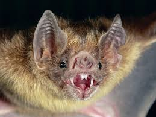

murcielago

Hábitat y Estilo de Vida: Los murciélagos viven en una variedad de hábitats en todo el mundo, excepto en las regiones polares. Se encuentran en cuevas, árboles huecos, edificios e incluso en el suelo. Son los únicos mamíferos capaces de volar, y su dieta varía mucho dependiendo de la especie: algunos comen insectos, otros frutas, néctar, peces o incluso sangre.
- Alas membranosas.
- Capacidad de vuelo.
- Ecolocación (en la mayoría de las especies), un sistema de navegación y caza basado en el sonido.
- Gran variedad de tamaños y formas.
- Juegan un papel importante en la polinización y el control de plagas.
menu